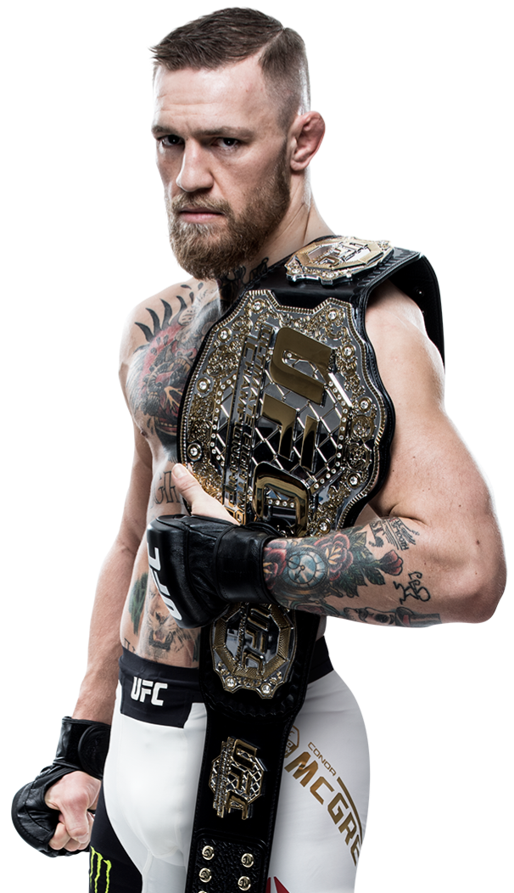

El octágono de la UFC se prepara para albergar el que ya es considerado el combate más mediático, tenso y explosivo de la década. No es solo una pelea por el legado; es una guerra absoluta entre dos eras, dos personalidades arrolladoras y dos estilos letales. Ilia "El Matador" Topuria frente a Conor "The Notorious" McGregor. Por un lado, la realidad más dominante y voraz del deporte actual; por el otro, el mayor icono de masas de la historia de las artes marciales mixtas. Las cartas están sobre la mesa y el planeta entero se detendrá para ver quién se queda con la corona del rey absoluto del hype y el peligro.

| Ilia Topuruia | Conor McGregor |
|---|---|
| Alias | |
| El matador | The notorious |
| Edad | |
| 29 | 37 |
| Nacionalidad | |
| Aleman/Georgiano/Español | Irlandés |
| Altura | |
| (5'7") 1.70m | (5'9") 1.75m |
| Alcance / Reach | |
| 1.75m (69") | 1.88 m (74") |
| Guardia / Stance | |
| Ortodoxa (Derecho) | Southpaw (Zurdo) |
| Récord Profesional MMA | |
| 17 - 0 - 0 (Invicto) | 22 - 6 - 0 |
| Efectividad por Vías | |
| 7 KO / 8 Sub / 2 Dec | 19 KO / 1 Sub / 2 Dec |
| Estatus / Título Actual | |
| Campeón del Peso Ligero UFC | Ex-Doble Campeón (Pluma y Ligero) |
| Grado / Cinturón | |
| Cinturón Negro en BJJ | Cinturón Negro en BJJ |

Lectura rápida de los datos: Conor McGregor posee ventajas físicas cruciales para su estilo de pelea: es 5 cm más alto y tiene una enorme ventaja de alcance de 13 cm, lo que potencia su letal contraataque de izquierda. Sin embargo, Ilia Topuria equilibra la balanza con una defensa de pie superior, la ventaja de la juventud (8 años menor) y un arsenal de lucha infinitamente más activo y preciso.